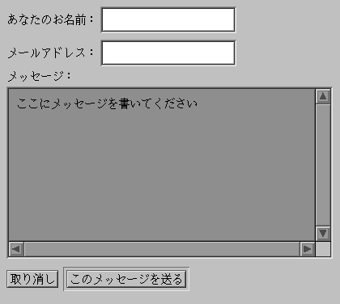
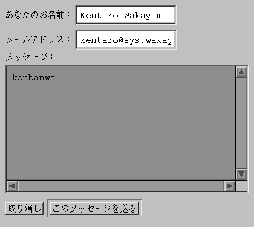

講義に入る前に shori2 にカレントディレクトリを移しておいてください。
HTML には Web ページ上でデータの入力を行う Fill-in Form（form タグ）という機能があります。 public_html の下に次のような Web ページ myform.html を作成してみてください。
| myform.html |
|---|
<head> <title>Form sample</title> </head> <body> <form> あなたのお名前： <input type="TEXT" name="NAME" maxlength="40"><br> メールアドレス： <input type="TEXT" name="ADDR" maxlength="40"><br> メッセージ：<br> <textarea name="MESG" cols="48" rows="10"> ここにメッセージを書いてください</textarea><br> <input type="RESET" value="取り消し"> <input type="SUBMIT" value="このメッセージを送る"> </form> </body> |
http://www.sys.wakayama-u.ac.jp/~s035xxx/myform.html （s035xxx は自分のログイン名）を Netscape で開けば、このページは次のように表示されると思います。

この各欄にデータ（文字）を入力して “このメッセージを送る”というボタンをクリックすれば、 入力したデータを Web サーバに送ることができます。 しかし、このままではまだ何も起こりません。
クライアント（Netscape などの Web ブラウザ）から送られてきたデータをサーバ側で利用するには、 サーバ側にデータを受け取るプログラムを仕掛ける必要があります。 このようなプログラムを CGI (Common Gateway Interface) と呼びます。
それでは、サーバ側に送られてきたデータを、 そのまま表示するプログラムを仕掛けてみましょう。 次のようなプログラムを作成してください。
| myform.cc |
|---|
#include <fstream.h>
int main(void) {
cout << "Content-Type: text/plain; charset=euc-jp\r\n\r\n";
char line[1024];
while (cin.getline(line, sizeof line) != 0) { // １行読んで、
cout << line << endl; // １行書く
}
return 0;
}
|
最初に標準出力 (cout) に出力している "Content-Type: text/plain; charset=euc-jp" という文字列は、 このプログラムから出力されるデータの形式です。 text/plain というのは plain text、すなわち HTML などによりレイアウトされていない生のテキストで、 charset=euc-jp はそのテキストに用いている文字コードです。 Web サーバ上に置いたデータは、 普通ファイル名の拡張子に関連付けられたデータの形式 (MIME Type) によって内容を判断します。 しかし、CGI から送り出されるデータには、 この方法で関連付けを行うことができませんから、 代りに送り出すデータの先頭でデータの形式を明示します。
Content-Type とデータの本体を区切るために、 この後ろを１行空けます。 空行を出力するために、この文字列の最後に '\r'（復帰）と'\n'（改行）を２組追加します。
そのあとに標準入力から１行読んで、 それをそのまま標準出力に出力しています。 cin.getline() は入力データの終りに達する（データがもうない）か、 データ入力時にエラーが発生すると 0（ヌルポインタ）を戻します。 したって、これを while () の継続条件に使って処理を繰り返します。
これをコンパイルして myform.cgi という実行プログラムを作成し、 ためしにそれを実行してみてください。 キーボードから適当な文字をタイプして、 それがそのまま表示されることを確かめてください。 また最後に Ctrl-D をタイプして、プログラムが終了することを確かめてください。
% CC myform.cc -o myform.cgi[Enter]
% myforn.cgi[Enter]
Content-Type: text/plain; charset=euc-jp （←出力するデータの形式）
（←空行）
test[Enter] （←キーボードをタイプ）
test （←タイプした文字がそのまま出てくる）
abc[Enter]
abc
Ctrl-D （←Ctrl-D をタイプして入力を終了）
% （←プログラムが終了）
|
myform.cgi が期待通り動くようなら、 これを myform.html と同じディレクトリにコピーしましょう。
% cp myform.cgi ~/public_html[Enter] |
次に、myform.html を修正し、 <form> タグを下のように修正してください。
<form method="POST" action="./myform.cgi"> |
これで“このメッセージを送る”ボタンをクリックしたときに myform.cgi が実行され、その標準入力に myform.html の各欄に入力したデータが与えられます。 このページをもう一度開いて（既に開いている場合は reload して）、 何かデータ（とりあえず今はアルファベットのみ）を入れて “このメッセージを送る”ボタンをクリックしてみてください。

すると次の内容のページが現われると思います。 これが myform.cgi に与えられたデータです。
NAME=Kentaro+Wakayama&ADDR=kentaro%40sys.wakayama-u.ac.jp&MESG=konbanwa |
これを見ると、データの書式は次のようになっていることが分かります。
& で区切られているわけですから、 cin.getline() の３つ目の引数（終端文字）に '&' を指定すれば、欄ごとにデータを取り出すことができそうです。 muform.cc の cin.getline() の行を以下のように修正してみましょう。
while (cin.getline(line, sizeof line, '&') != 0) { |
これをコンパイルして myform.cgi を作り、myform.html と同じディレクトリにコピーしたあと、myform.html のページを reload して、先ほどと同じデータを入れてみてください。 １行ごとに一つの欄のデータを取り出せると思います。
NAME=Kentaro+Wakayama ADDR=kentaro%40sys.wakayama-u.ac.jp MESG=konbanwa |
それでは、このデータから名前やメールアドレスなど必要な部分を取り出して、 それを HTML でレイアウトして表示してみましょう。 記号や日本語の漢字コードなどは、"%+16進数" という表記になっていますから、 これも元の文字に直します。
|
Date: Wed Jan 20 10:50:00 1999 From: Kentaro Wakayama (kentaro@sys.wakayama-u.ac.jp) konbanwa |
たとえば上のようにレイアウトするには、myform.cgi の出力を下のように加工する必要があります。
<p><hr> Date: Wed Jan 20 10:50:00 1999 <br> From: Kentaro Wakayama (kentaro@sys.wakayama-u.ac.jp) <hr> konbanwa |
では、まずはじめに文字を元に戻す関数を作ります。これを decode() としましょう。引数には入力された文字列 encoded と、元に戻した文字列を格納する配列 decoded を指定します。
| decode.cc |
|---|
void decode(char *encoded, char *decoded) {
while (*encoded != '\0') {
int i;
switch (*encoded) {
case '+':
*decoded = ' ';
break;
case '%':
*decoded = '\0';
for (i = 0; i < 2; i++) {
unsigned char c = *++encoded;
*decoded *= 16;
if (c >= '0' && c <= '9') *decoded += c - '0';
else if (c >= 'A' && c <= 'F') *decoded += c - 'A' + 10;
else if (c >= 'a' && c <= 'f') *decoded += c - 'a' + 10;
}
break;
default:
*decoded = *encoded;
break;
}
++encoded;
++decoded;
}
} |
次に、入力された各行を、 それが NAME= で始まっていれば配列 name[] に、 ADDR= で始まっていれば配列 addr[] に、 MESG= で始まっていれば配列 mesg[] に格納するよう main() を修正します。配列への格納には上で定義した decode() を使用して、同時に文字の変換も行います。
| myform.cc |
|---|
#include <fstream.h>
#include <string.h>
#include <time.h>
extern void decode(char *, char *);
int main(void) {
cout << "Content-Type: text/plain; charset=euc-jp\r\n\r\n";
char line[1024], name[41], addr[41], mesg[1024];
while (cin.getline(line, sizeof line, '&') != 0) {
if (strncmp(line, "NAME", 4) == 0) decode(line + 5, name);
else if (strncmp(line, "ADDR", 4) == 0) decode(line + 5, addr);
else if (strncmp(line, "MESG", 4) == 0) decode(line + 5, mesg);
}
time_t now;
time(&now);
cout << "<p><hr>" << endl;
cout << "Date: " << ctime(&now);
cout << "<br>" << endl;
cout << "From: " << name << " (" << addr << ")" << endl;
cout << "<hr>" << endl;
cout << mesg << endl;
return 0;
}
|
strncmp() は第１引数に指定した文字列と第２引数に指定した文字列を、 第３引数に指定した文字数だけ比較して、一致していれば 0 という値になります。 これを使用するために string.h を読み込んで（include して）います。
time() は世界標準時の1970年1月1日午前0時から現在までの秒数を求めます。 ctime() はそれを文字列に直します。
それでは、この decode.cc と myform.cc を組み合わせてコンパイルして、 myform.cgi を作ってください。
% CC myform.cc decode.cc -o myform.cgi[Enter] |
このあと myform.html のページで適当にデータを入力し、 上で示した HTML による表示が得られるかどうか確認してください。 なお、myforn.cc で出力している text/plain という文字列を text/html に書き換えれば、HTML としては不完全ですが一応レイアウトされたものが表示されます。 これも試してみてください。
myform.cgi の出力をそのままクライアント (Netscape) に返すのではなく、一旦ファイルに保存して、 SSI を使ってそれを myform.html のページに含めるようにしてください。
myform.html で SSI が使えるようにするために、このファイル名を myform.shtml に変更してください。
myform.shtml の下部（</body> より前）に
<!--#include file="mydata"-->という１行を入れてください。 これで myform.shtml と同じディレクトリにある mydata というファイルの内容がこの部分に埋め込まれます。
myform.cgi を実行したとき、 その出力をクライアントに表示する代りに myform.shtml が表示されるようにします。このために myform.cc の最初の方にある
cout << "Content-Type: .. \r\n\r\n"の前に
cout << "Location: http://www.sys.wakayama-u.ac.jp/~s035xxx/myform.shtml\r\n"を追加します。
これよりあとで標準出力に出力していた HTML のデータを、 /usr/people/ユーザ名/public_html/mydata というファイルに書き込むようにします。これは ofstream を使います。最後にファイルを閉じることも忘れないでください。
なお、このままだと直前に書き込まれたメッセージしか表示されません。 以前に書き込まれたデータに追加するようにするには、 ofstream 型の変数を宣言する際に、 その初期値の第２引数（ファイル名の次）に ios::app（ファイルの追加モード）を指定してください。
ofstream ofile("mydata", ios::app);
この myform.cgi は mydata というファイルを作成しますから、 コンパイル後これに setuid ビットを立てておいてください。
このプログラムにはいろいろ問題があります （排他制御を行っていないので、 複数の人が同時に書き込むとデータを壊す恐れがあるとか、 データを追加モードで書いているのでデータが登録順に並んでしまう～ 逆順の方が見やすい～とか） が、そのあたりは将来の課題として暇がある人は考えてみてください。
うまくできたら、Netscape の「ファイル」メニューにある「リンクを送信」で、 そのページを私 (tokoi) に知らせてください。Subject:（件名）は kadai28 としてください。